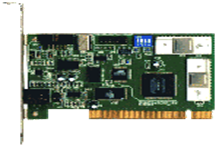
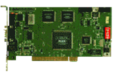
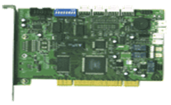

Ахборотни криптографик химоялаш в о с и т а л а р и
Ҳар қандай ахборотнинг махфийлигини таъминлашнинг бирдан бир усули бу шифрлашдир. Шифрлаш усуллари жорий ахборотга кўра турли хилда бўлади.
Криптография тарихидан маълумки, инсонлар махфий ёзув саънатини эгаллашга жуда иштиёқманд бўлишган. Бу ишлар бевосита қўлда эмас, балки махсус шифрлашни амалга оширувчи турли воситалар ясашга ҳам қўл уришган.
Қуйида шулардан баъзиларни келтирамиз:
|
Роторли ШВ номланиши |
Яратилган вакти |
Дисклар сони |
Элементлар сони |
ШВ бошқарлиши |
Криптографик асоси |
|
Альберти диски |
1466 й. |
2 та |
24 та |
Механик |
Бир алфавитли
|
|
Жефферсон диски |
1800 й. |
36 та |
36 та |
Механик |
Куп алфавитли |
|
Энигма шифр дисклари |
1923 й. |
3-5 та |
26 та |
Электромеханик |
Куп алфавитли |
|
SIGABA шифр дисклари |
1924 й. |
8 та |
26-35 та |
Электромеханик |
Куп алфавитли |
|
TYPEX шифр дисклари |
1922 й. |
8 та |
26-35 та |
Электромеханик |
Куп алфавитли |
|
Буралма шифраторла |
1998 й. |
2 та |
256 та |
Электромеханик |
Куп алфавитли |
Ахборот хажмининг ортиб бориши ва телекоммуникация технологияларининг жадал ривожланиб, жамиятнинг турли ижтимоий, иктисодий ва сиёсий сохаларига кириб бориши ахборотлар алмашинуви хажми кескин ортган бугунги тараккиётда ахборот химоясини таъминловчи замонавий аппарат-техник, аппарат-дастурий шаклидаги турли воситалар ишлаб чикилиб амалиётга жорий этилмокда.
Ушбу аппарат-техник ва аппарат-дастурий воситалар ишлаш тезликлари ва уларда жорий этилган алгоритмларнинг бардошлилиги ва бошқа криптографик хусусиятларига кура бир-биридан тубдан фарк килади.
Компьютер тармокларида ахборот алмашинуви чогида уларни махфийлигини таъминлаш учун ҳар хил тармок карталари куринишида шифрловчи қурилмалар ишлаб чикилмокда. Бунга мисол тарикасида тармок карталарини ишлаб чикувчи Россия федерациясида жойлашган “Анкад” фирмасини келтириш мумкин. Ушбу фирма томонидан тармокда ахборот химоясини таъминловчи турли воситалар ишлаб чикилган.
Мазкур воситалар “КРИПТОН” номи билан фойдаланувчиларга маълум булиб, аппарат-дастурий шаклга эга.

КРИПТОН-4 нинг техник ҳарактеристикаси:
- шифрлаш алгоритми ГОСТ 28147-89
- калит узунлиги 256 бит
- шинаси ISA - 8
- шифрлаш тезлиги 350 кбайт/с
- калит ташувчиси дискета ёки смарт карталар

КРИПТОН-4/PCI техник ҳарактеристикаси:
- шифрлаш алгоритми ГОСТ 28147-89
- калит узунлиги 256 бит
- шинаси PCI (Target)
- шифрлаш тезлиги 1100 кбайт/с
- калит ташувчиси дискета, смарт карталар ва МП

КРИПТОН-8/PCI техник ҳарактеристикаси:
- шифрлаш алгоритми ГОСТ 28147-89
- калит узунлиги 256 бит
- шинаси PCI (Bus Master, Target)
- шифрлаш тезлиги 8500 кбайт/с
- калит ташувчиси дискета, смарт карталар ва МП
“КРИПТОН” аппарат-дастурий воситаларининг устунлик жихатлари сифатида қуйидагилар таъкидланади:
- ГОСТ 28147-89 шифрлаш алгоритмини аппарат қурилма шаклида амалга оширади;
- шифрлаш калити компьютер тезкор хотирасида эмас балки шифрлаш алгоритми аппарат қурилмасида сакланади;
- аппарат-дастурий воситаларига калитларни юклашда смарт карталар ёки “Touch Memory” қурилмаларидан фойдаланилади;
- компьютердаги файл куринишдаги турли электрон маълумотларни шифрлайди ва уларнинг махфийлигини таъминлайди.
Шифрлаш усулидан фойдаланиш узатилаётган маълумотнинг нафакат махфийлигини кафолатлайди, балки унда хосил бўладиган бузилиш ва хатоликларни ҳам самарали аниклашга ёрдам берувчи яна бир аппарат-дастурий қурилмалардан бири Россиянинг Пенза шахрида жойлашган электротехник илмий-тадкикотлар институти томонидан ишлаб чикилувчи “Верба-OW” дир.
“Верба-OW” нинг техник ҳарактеристикаси:
- шифрлаш тезлиги 2 Мбайт/с
- дешифрлаш тезлиги 2,10 Мбайт/с
- хэш-функцияни хисоблаш вакти 1600 Кбайт/с
- электрон имзони шакллантириш вакти 0,006 с.
- электрон имзони текширишга кетадиган вакт 0,02 с.
Мазкур қурилма ахборот химоясига оид қуйидаги масалаларни ечишга каратилган:
- электрон маълумотларни шифрлаш ва дешифрлаш;
- калитларни генерация килиш;
- электрон имзони шакллантириш ва унинг тугрилигини текшириш.
Бу ерда келтирилган ва умуман бошқа ҳар қандай ахборотни криптографик химоя килишга каратилган аппарат-техник воситаларни яратишда қуйидаги маълум принципларга таянмок керак:
- аппарат-техник восита оркали шифрланган ахборот криптобардошли булиши керак;
- аппарат-техник воситани ишлатиш фойдаланувчи учун нокулай-ликлар тугдирмаслиги керак;
- қурилмада калитларни алмаштириш куп вактни талаб этмаслиги керак;
- шифрматнни аппарат-техник воситада факат калит маълум бул-гандагина кайташифрлаш имкони булиши керак;
- аппарат-техник воситанинг узи ёки ишлаш алгоритми маълум булиб, колган тарзда ҳам ахборотнинг криптобардошлигига таъсир килмаслиги керак.